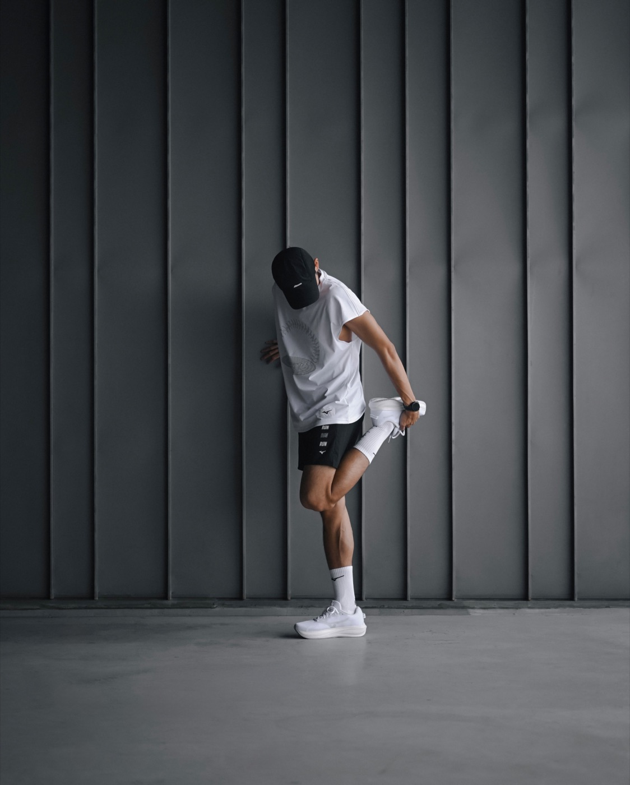

SPORTWEAR PLUS / CONTENT PLAN 01
Movimiento
en detalle.
Planning de SportWear Plus para 16 productos Nike. Carruseles de running y producto con sesión prevista en Blitz, Guachipelín.

REFERENCIA VISUAL · POST 01
PIEZAS14Incluye cierre de calzado
PRODUCTOS165 calzados · 10 textil · 1 medias
SEMANA(S)05Fechas por definir
REFERENCIAS259Fotos de 30 posts
01 / EL PLAN
Calendario editorial
Selecciona una pieza para ver productos, secuencia de fotos y dirección de toma.
No hay piezas para ese filtro.
02 / PRODUCTOS
Catálogo de campaña
Los 16 SKU con imagen y enlace a la referencia visual de cada producto.
No hay productos para ese filtro.
03 / MOODBOARD
Lenguaje visual
Referencias de encuadre y ritmo para SportWear Plus. Estas imágenes no son material final de campaña.
LA FÓRMULALook completo → producto puesto → macro → movimiento → cierre.
Adaptar los encuadres al interior de Blitz: piso de madera clara, muros verde lima, techo oscuro y luz cálida.
04 / GALERÍA COMPLETA
Referencias y sesión IA
Explora todas las fotos seguidas, filtra por estilo y marca las que usarás.
Los estilos se pueden ajustar en cada foto. La selección se guarda en este navegador y puedes exportarla para otro dispositivo.
No hay fotos en este filtro.